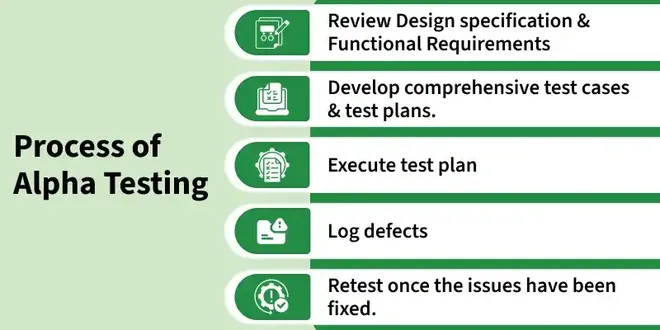
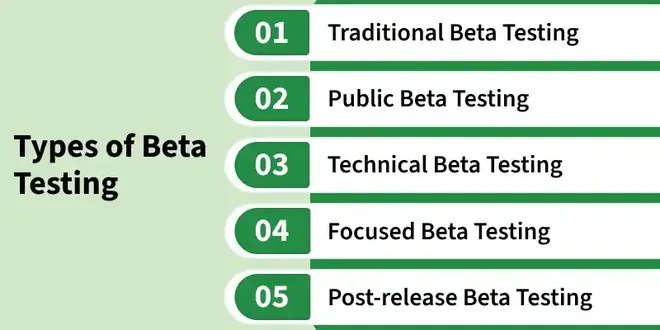

7.18–7.19 Alpha & Beta Testing
Alpha testing and beta testing are two forms of acceptance testing — validation activities that confirm the software meets user needs before or during release. Both belong to the acceptance level described in §7.8 Acceptance Testing; alpha runs first at the developer site, beta follows with external users in real environments.
Alpha testing (7.18)
- Alpha testing is internal acceptance testing performed at the developer's site before the product is released to external customers.
- The QA team and selected internal users (employees, in-house stakeholders) test the nearly complete product in a controlled environment.
- Alpha testing occurs before beta testing — defects found here are fixed before the software reaches external users.
- Testers simulate real usage scenarios while developers remain available to fix critical bugs quickly.
- Alpha testing validates that the product is stable enough for limited external exposure and that major functional requirements are met.

Beta testing
- Beta testing is external acceptance testing where real users evaluate the product in their own real environment — not at the developer's site.
- A limited number of users receive a pre-release version and use it under normal operating conditions.
- The primary goal is feedback collection — usability issues, compatibility problems, and defects that only appear in diverse real-world setups.
- Beta testing follows alpha testing; the product is considered feature-complete but may still contain defects.
- Developers analyse feedback and release patches before general availability.
Open beta vs closed beta

- Closed beta: Access is restricted to a selected group of invited users — common for enterprise or regulated products where controlled feedback is needed.
- Open beta: The pre-release version is available to any interested user — useful for gathering broad compatibility and scale feedback before launch.
- Both types are external validation; the difference is who is allowed to participate and how feedback volume is managed.
Alpha vs beta testing
| Dimension | Alpha testing | Beta testing |
|---|---|---|
| Who tests | QA team and internal users at the organisation | External real users (customers, volunteers) |
| Where | Developer's site / controlled lab | User's own site — home, office, production-like setting |
| Environment | Controlled, simulated, developer-supervised | Real-world, diverse hardware, networks, and usage patterns |
| Purpose | Find and fix defects before external exposure; confirm readiness for beta | Collect user feedback; validate fitness for purpose in real conditions |
| When | Before beta — after system testing, before general release | After alpha — pre-release to selected or open user base |
Validation and acceptance testing
- Both alpha and beta testing are types of validation testing — they answer "Are we building the right product?" rather than checking internal conformance alone.
- They are also forms of acceptance testing — the final level in the testing hierarchy (unit → integration → system → acceptance) covered in §7.5–7.10.
- Alpha leans toward controlled validation with internal stakeholders; beta extends validation to actual end-user experience before full deployment.
- See also §8.3 Verification & Validation for the broader V&V framework.
Exam question — Alpha & Beta Testing
Q: Define alpha and beta testing. Compare who tests, where, environment, purpose, and timing. State their relationship to acceptance and validation testing. Distinguish open and closed beta.
Model answer points:
- Alpha = internal acceptance testing at developer site; QA + internal users; controlled environment; before beta; bugs fixed before release.
- Beta = external users test in real environment; limited users; feedback collection; follows alpha.
- Closed beta = invited users only; Open beta = any interested user.
- Both are validation testing and acceptance testing types — final level after system testing.
- Alpha: who = internal; where = developer site; when = before beta. Beta: who = external; where = user site; when = pre-release after alpha.
- Common trap: alpha is NOT beta — alpha is internal/controlled; beta is external/real-world.